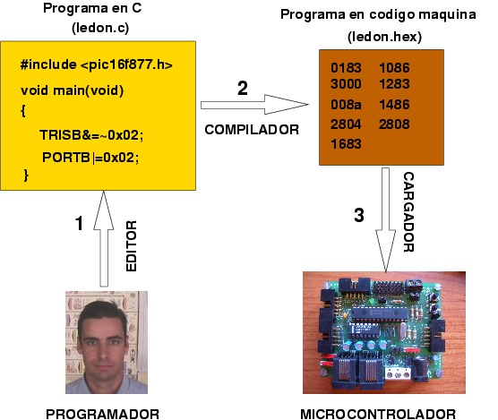

|
Taller de Robótica UCA 2005. SESION 3. Introducción |
|
|
En esta introducción explicaremos en qué consiste la programación microcontrolador para que se tengan las ideas claras y se conozca la terminología. Se muestran las herramientas que utilizaremos con sus enlaces. En capítulos posteriores se darán más detalles de cómo instalar todo el software y cómo ponerlo en marcha.
El robot está controlado por un “cerebro”: el microcontrolador. Es como un pequeño ordenador que ejecuta las instrucciones que nosotros le digamos. En nuestro robot, este microcontrolador es el PIC16F876A de Microchip, que está en la tarjeta Skypic (es el chip más largo).
Los microcontroladores sólo son capaces de entender instrucciones en binario. Es lo que se llama código máquina. El programa “hola mundo” es el programa más sencillo que ejecutaremos. Lo único que hace es encender un led. En código máquina tiene esta pinta, con las instrucciones escritas en notación hexadecimal en vez de binario:
0183 3000 008a 2804 1683 1086 1283 1486 2808
Nosotros no entendemos nada, pero el microcontrolador sí.
Para que los humanos podamos indicar al microprocesador qué instrucciones queremos que ejecute, se han inventado los lenguajes de programación, que son ficheros de texto con instrucciones legibles por los humanos. En este taller emplearemos el Lenguaje C.
Sin embargo, a los micros les pasa lo contrario: no entienden los lenguajes de programación, sólo el código máquina. Por ello es necesario utilizar un software que traduzca nuestros ficheros escritos en C al código máquina: esta es la misión del Compilador de C. Un programa que “entiende” el C y genera el código máquina correspondiente.
|
 |
Así, los pasos para que el micro ejecute lo que nosotros queremos son los siguientes:
Crear el programa con instrucciones en C. Será un fichero de texto con extensión .c. Por ejemplo ledon.c. Necesitaremos un Editor de textos.
Traducir ese programa a código máquina, para que el microcontrolador lo pueda enter. Usamos un Compilador de C. El fichero con el código máquina tiene extensión .hex. En este ejemplo se generaría el fichero ledon.hex
Cargar el programa en la memoria del microcontrolador para que lo ejecute. Necesitamos un Cargador.
Para realizar el taller necesitaremos las siguientes herramientas:
Un editor de texto ASCII, o entorno integrado. Según la plataforma (Linux, Windows) utilizaremos uno u otro.
Un compilador de C. Nosotros utilizaremos el SDCC, que es libre. Para que funcione tenemos que instalar además las herramientas GPUTILS, también libres. (Realmente el SDCC traduce de lenguaje C a lenguaje ensamblador y las gputils de lenguaje ensamblador a código máquina)
Un cargador. Utilizaremos el PICBOOTLOADER, de Shane Tolmie, que también es libre. Tiene dos partes, una que ya está grabada en el microcontrolador (el bootloader) y la otra es el propio cargador que se ejecuta en el PC.
|
La carga de programas en el microcontrolador la realizaremos a través del puerto serie. Por ello es muy importante disponer de un ordenador con puerto serie o si no se dispone de él, tener un conversor USB-serie con los drivers instalados. |